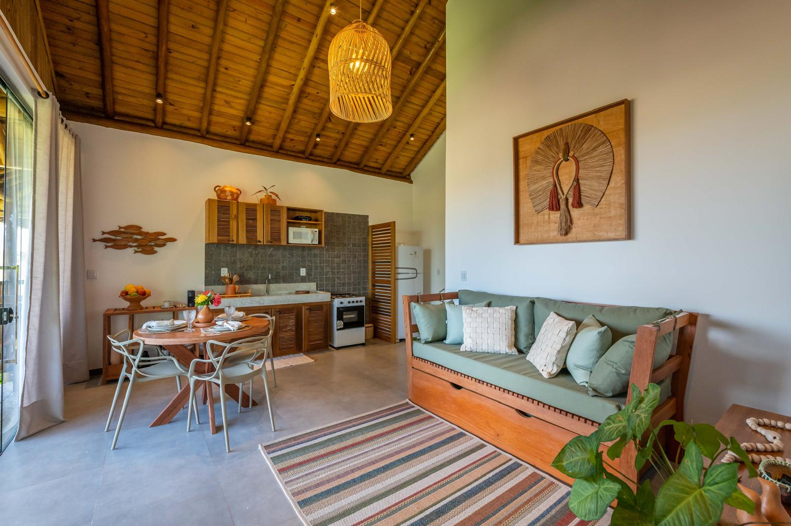
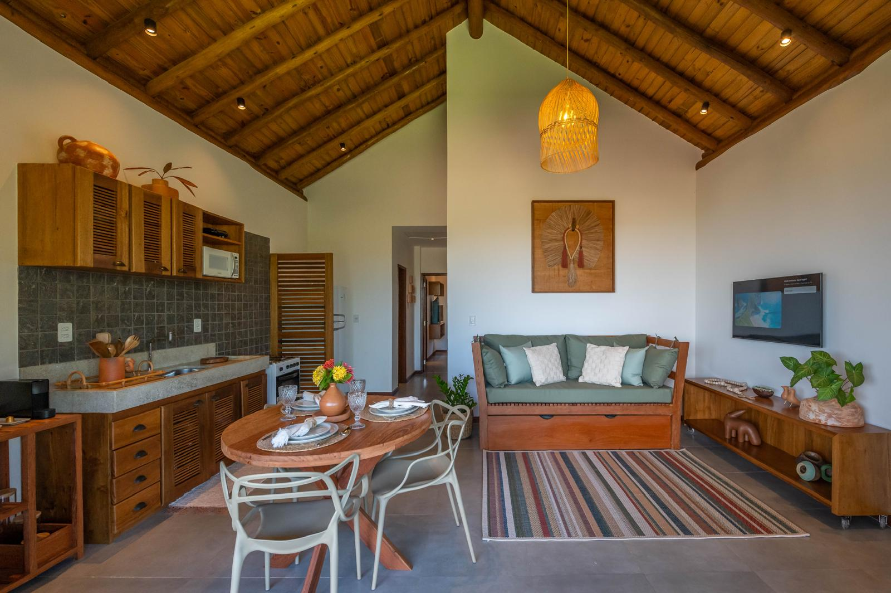
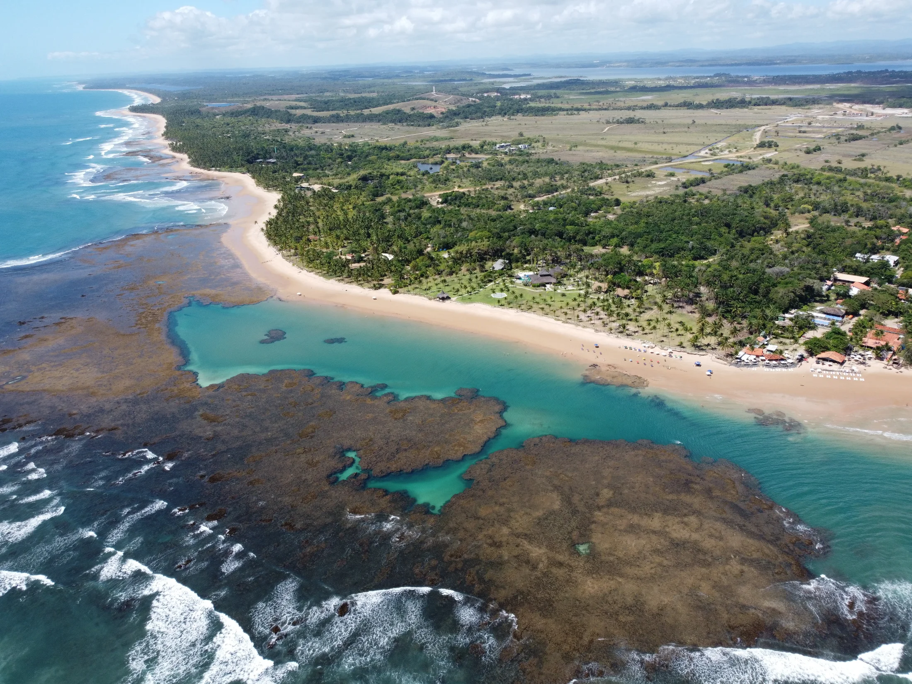

Piscina ao ar livre
Água e jardim compondo um cenário reservado.
TAIPU DE FORA • BAHIA
Aluguel de temporada a poucos passos das piscinas naturais, com conforto, privacidade e tudo o que você precisa para viver dias inesquecíveis na Bahia.
Reservar agoraSeu santuário particular
No Havre Taipu, madeira, luz e paisagismo se encontram em uma atmosfera naturalmente elegante.
Os espaços se abrem para o jardim e a piscina, criando uma experiência fluida entre interior e exterior — um convite ao descanso em um dos cenários mais especiais da Bahia.


Design que deixa a paisagem entrar.
Essenciais do bem-estar
Tudo pensado para uma estadia confortável.
Água e jardim compondo um cenário reservado.
Um espaço funcional integrado à área social.
Para tardes lentas sob a arquitetura de madeira.
Conforto nos quartos em todas as estações.
Galeria
Texturas naturais, espaços generosos e a calma de um jardim tropical.
Tour virtual
Percorra os ambientes e descubra a conexão entre arquitetura, jardim e água.

O destino
Na Península de Maraú, Taipu de Fora encanta pelas piscinas naturais formadas entre os recifes na maré baixa, pelas águas cristalinas ideais para snorkel e pela extensa faixa de areia branca cercada por coqueiros. Gastronomia baiana, passeios de barco, praias reservadas e o pôr do sol sobre os corais completam a experiência — um encontro singular entre biodiversidade, tranquilidade e autenticidade.
FAQ
O Havre Taipu é uma casa de temporada completa, ideal para famílias e grupos de amigos. A propriedade conta com:
O Havre Taipu está localizado em Taipu de Fora, na Península de Maraú, um dos destinos mais bonitos do litoral baiano.
A propriedade fica aproximadamente:
O aeroporto mais utilizado por quem visita a região é o Aeroporto Jorge Amado (Ilhéus - BA).
Sim.
Nas proximidades é possível encontrar restaurantes, bares de praia, mercados, padarias e serviços essenciais, permitindo aproveitar a estadia com conforto sem precisar percorrer grandes distâncias.
As reservas são realizadas pelo Airbnb.
Clique no botão “Reservar agora” presente no site para consultar disponibilidade, valores e concluir sua reserva com total segurança.
Sim.
Todas as fotografias exibidas neste site são reais e representam os ambientes da propriedade, permitindo que você conheça cada detalhe antes da sua chegada.